Dr. Giácomo Trojan · Lipo de papada
Os anúncios ativos de 13 especialistas, tirados da Biblioteca de Anúncios da Meta: o link de cada um, as imagens que estão rodando e o que vale observar em cada página. É referência para as próximas gravações.
Lemos 422 anúncios, entre os 556 que estas páginas mantêm ativos hoje. Três números resumem como esse mercado anuncia:
São a prova mais forte de que o formato funciona.
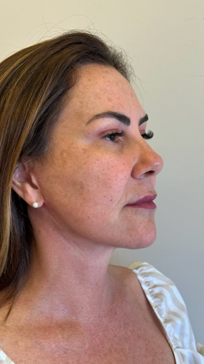
478 dias Dra Amanda Bracoo - Lipo de Papada HD · Vídeo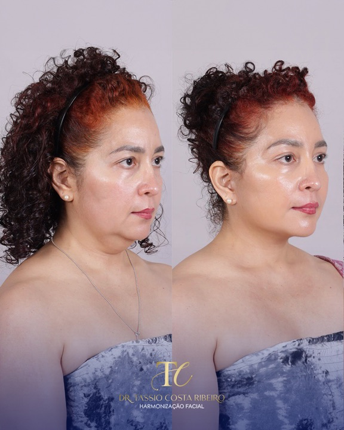
461 dias Dr. Tassio Costa · Imagem 421 dias Dra Amanda Bracoo - Lipo de Papada HD · Vídeo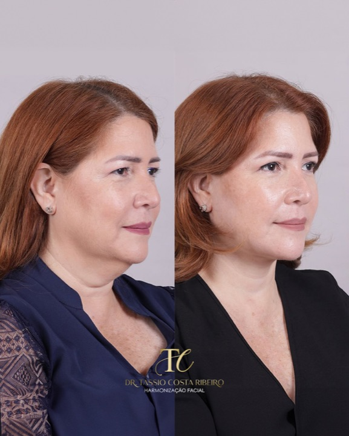
383 dias Dr. Tassio Costa · Imagem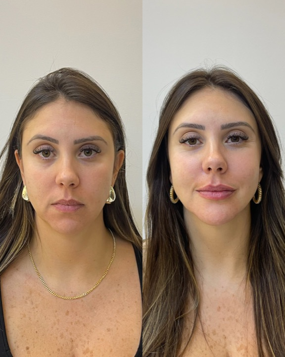
373 dias Larissa Ribeiro HOF · Carrossel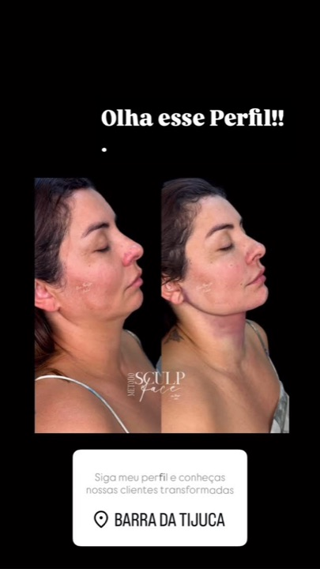
349 dias Dra Thayza Fabri Corsi · VídeoQuase todos mostram o pescoço de lado, com a mesma luz e a mesma pose no antes e no depois. Quem usa o texto da Resolução CFO 196/2019 na legenda anuncia antes e depois sem problema há mais de um ano (Tassio Costa, 461 dias; Amanda Bracoo, 478).
Dra. Carolina Macedo · Thayza Corsi · Tassio Costa“A Mayara me disse no dia da avaliação…”, “A Tere tem 66 anos…”, “Você viu o antes e depois da Michele…”. O Dr. já faz isso com a Karina, a Débora e a Vania, e esse formato se repete em quase todas as páginas.
Rafael Evaristo · Mariana Vitiello · Verônica Rosseto · Daniela GonçalvesGordura, pele ou músculo: quem explica a diferença se posiciona como quem sabe avaliar. É exatamente a linha do roteiro 1.
Dra. Carolina Macedo (“Volume ou flacidez?”) · Rafael Evaristo (“Músculo flácido”) · Alessa Cassaro (3 pilares)“Mesmo treinando e fazendo dieta ela não some?”, “Mesmo sendo magra…”, “Se você já tentou bioestimulador, ultrassom…”, “O lifting não resolve a papada”.
Doctors · Gisele Nunes · Thayza Corsi · Rafael EvaristoSutura, cinta, drenagem, o dia 7 e o dia 20. Mostrar o pós tira o medo, que é a trava mais comum (é a linha do roteiro 2).
Rafael Evaristo · Alessa Cassaro · Gisele NunesLipo Relocate, Papada Zero Lift, Glow Lift, Método dos 3 Pilares, Lipo de Papada HD. O nome vira marca, aparece em toda peça e diferencia de quem faz “só lipo”.
Gustavo Andrade · Mariana Vitiello · Verônica Rosseto · Alessa CassaroA pessoa entende o assunto do vídeo sem som, no primeiro segundo: “CONTORNO”, “O fim da papada em um procedimento”, “Resultado de lipo de papada”.
Rafael Evaristo · Alessa Cassaro · Doctors01
Parceira do Dr. Giácomo nas cirurgias de papada · São Paulo
Biblioteca de anúncios ↗ @dra.carolina.macedo ↗
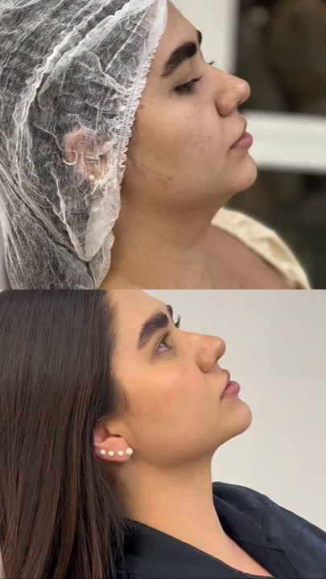
Um rosto contornado, trás uma leveza para face e uma harmonia natural.
Botão: WhatsApp ver anúncio ↗
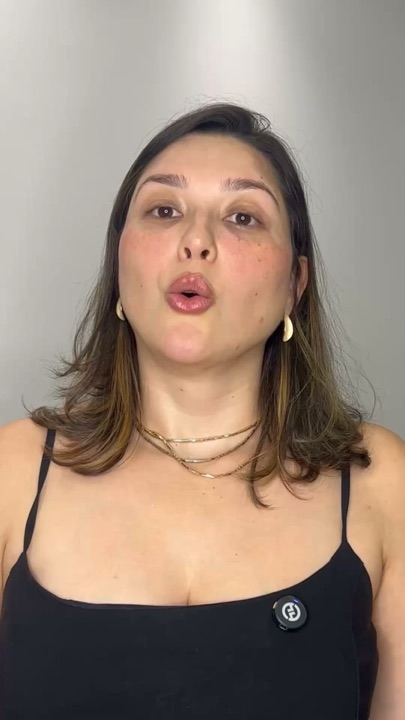
Botão: WhatsApp ver anúncio ↗
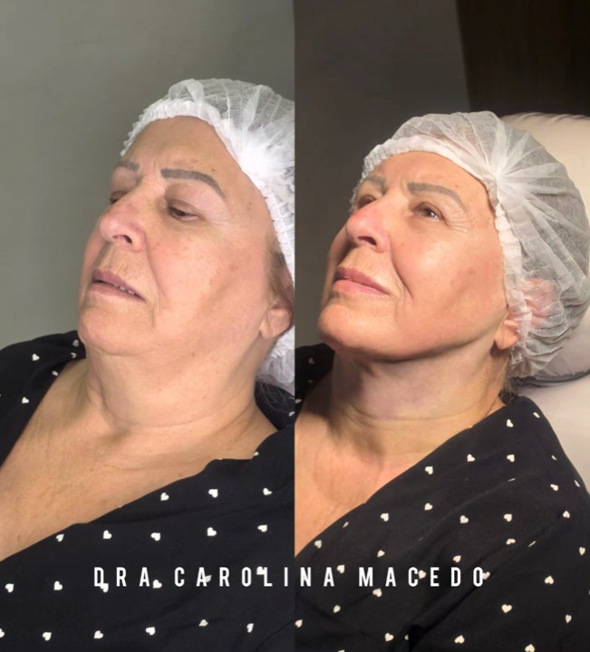
Ouvir. Entender onde você quer chegar, a sua disponibilidade de investimento e o que você está disposta a enfrentar no pós-tratamento. É assim que construo uma proposta.…
Botão: WhatsApp ver anúncio ↗
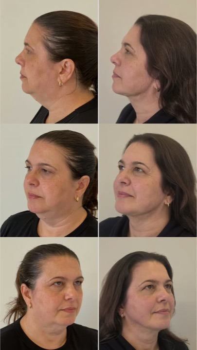
Se eu pudesse escolher uma palavra para esse caso seria: LEVEZA. Concorda ou teria uma outra palavra melhor para descrever esse resultado ?
Botão: WhatsApp ver anúncio ↗
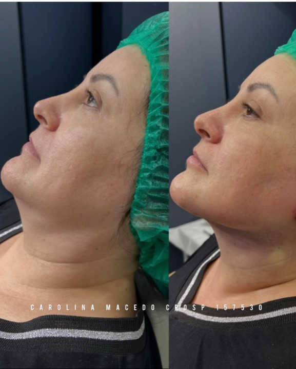
Volume ou Flacidez? O segredo está no diagnóstico. É muito comum confundir os dois, mas entender a diferença é o primeiro passo para um contorno facial. Nem sempre quem…
Botão: Perfil do Instagram ver anúncio ↗
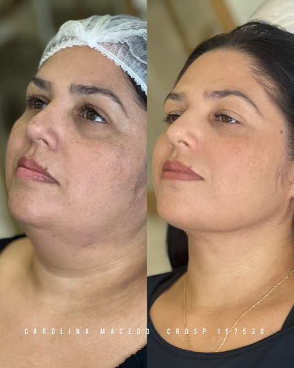
✨REDUÇÃO- DEFINIÇÃO- CONTORNO ✨
Botão: Perfil do Instagram ver anúncio ↗
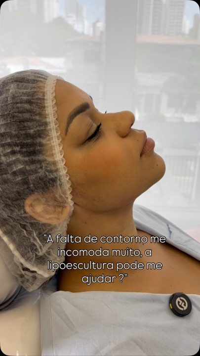
Sem remoção de pele Anestesia local 30 minutos de cirurgia Se você tem pouco volume no pescoço e falta de contorno, a lipoescultura pode te ajudar sim. Entre em contato…
Botão: Perfil do Instagram ver anúncio ↗
02
Especialista em papada · a maior operação de anúncios do grupo
Biblioteca de anúncios ↗ @drrafaelevaristo ↗
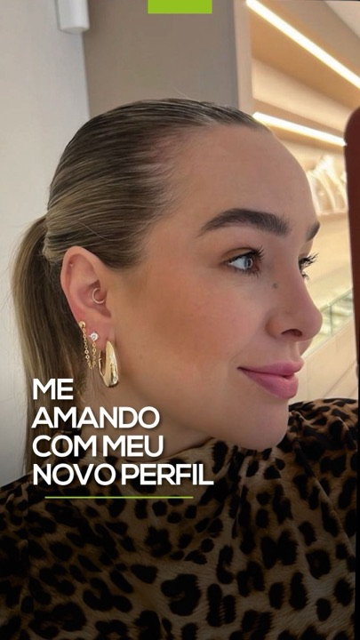
Três fases, uma transformação para a vida. O antes cheio de expectativas, o pós-mediato com cuidado e paciência, e o depois… o depois é a recompensa. Já se passaram mais…
Botão: Sem botão ver anúncio ↗
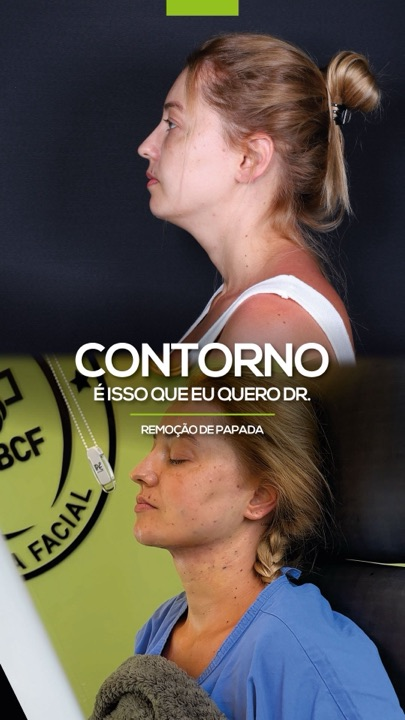
“Quero meu contorno bem marcado.” Foi assim que a Mayara me disse no dia da avaliação. Mesmo sendo jovem e magra, ela tinha uma papada que tirava a definição que…
Botão: Sem botão ver anúncio ↗
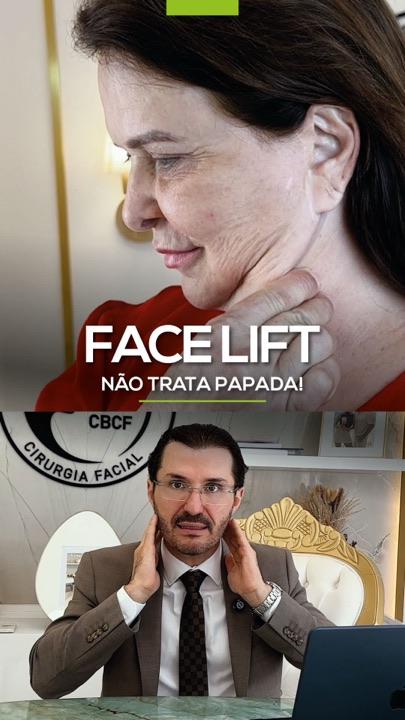
Muita gente acredita que o lifting resolve a papada. Mas o lifting trata o rosto, não a papada. A Hellen já tinha feito um facelifting antes, acreditando que resolveria…
Botão: Sem botão ver anúncio ↗
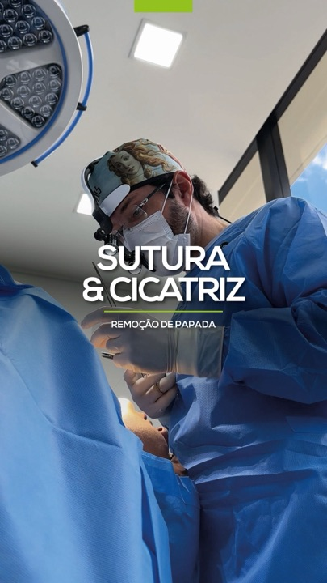
A sutura é um momento muito importante do procedimento. Como não removemos pele, fecho as bordas com precisão para que a cicatriz fique mínima e bem escondida abaixo do…
Botão: Sem botão ver anúncio ↗
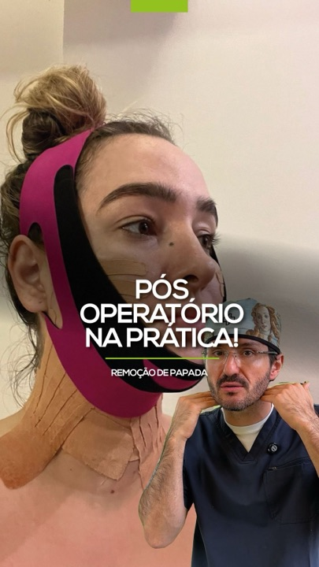
A recuperação da cirurgia de papada costuma ser muito mais rápida e tranquila do que a maioria imagina. A Lívia passou por todas as fases: um pouquinho de inchaço, a…
Botão: Sem botão ver anúncio ↗
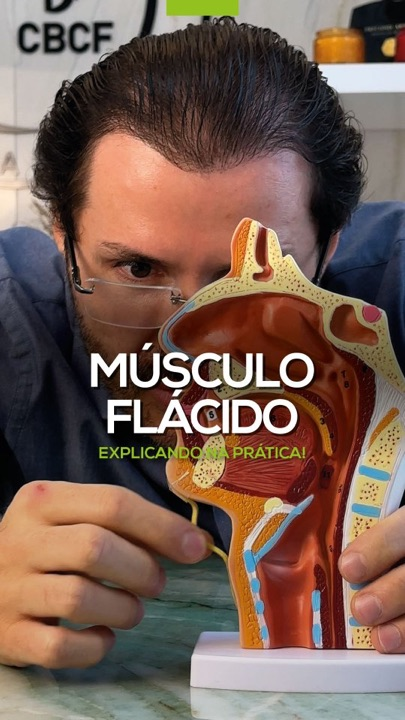
Você acha que papada é só gordura e pele? Na verdade, ela também é formada por músculo. E sim ele também pode ficar flácido! Não adianta tratar apenas a pele ou remover…
Botão: Sem botão ver anúncio ↗
03
Cirurgião de face · criou a marca “Lipo Relocate”
Biblioteca de anúncios ↗ @drgustavo.andrade ↗
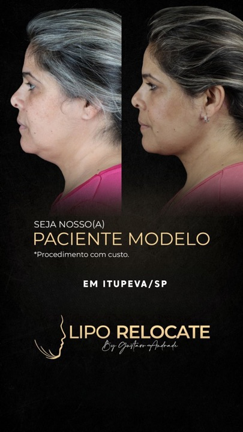
[VAGAS PARA PACIENTE MODELO] Além dos benefícios estéticos evidentes, como a melhora da aparência e o rejuvenescimento facial, a lipo de papada com reposicionamento…
Botão: WhatsApp ver anúncio ↗
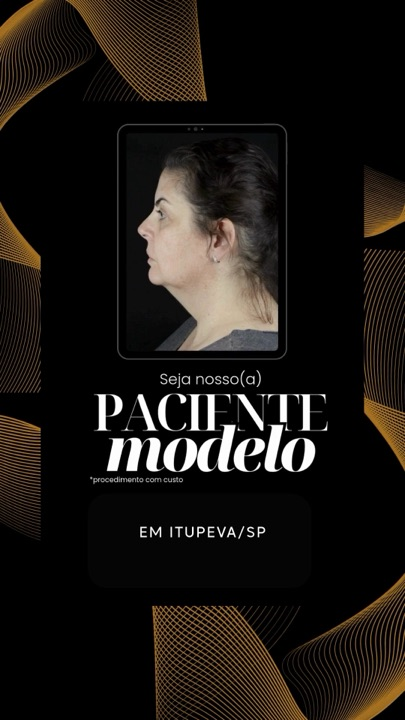
Além dos benefícios estéticos evidentes, como a melhora da aparência e o rejuvenescimento facial, a lipo de papada com reposicionamento muscular pode trazer também…
Botão: WhatsApp ver anúncio ↗
04
Página dedicada: “Lipo de Papada HD”
Biblioteca de anúncios ↗ Página no Facebook ↗
Mais um resultado incrível! Dessa vez, a paciente apresentava queixas de pescoço flácido e sem contorno definido. E, como sempre, escolhi o melhor para ela:…
Botão: WhatsApp ver anúncio ↗
A região do pescoço costuma ser uma das primeiras a denunciar o tempo... Flacidez, perda de definição e o famoso “derretimento facial” impactam diretamente a autoestima…
Botão: WhatsApp ver anúncio ↗
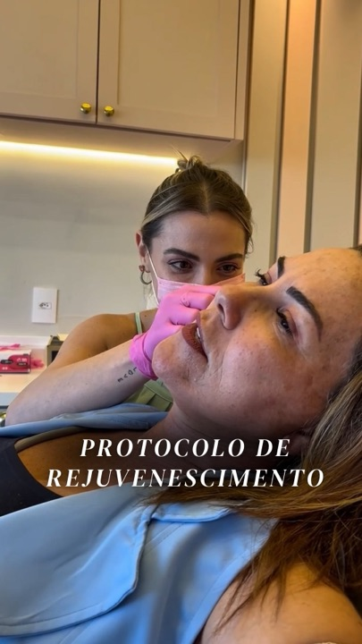
✨ O processo de rejuvenescimento não acontece da noite para o dia ele é construído com escolhas inteligentes e personalizadas. Essa paciente iniciou sua jornada por um…
Botão: WhatsApp ver anúncio ↗
Existem procedimentos que vão muito além da estética, ela redefine contornos, devolve firmeza e realinha o que o tempo suavizou. O segredo está na naturalidade: um…
Botão: WhatsApp ver anúncio ↗
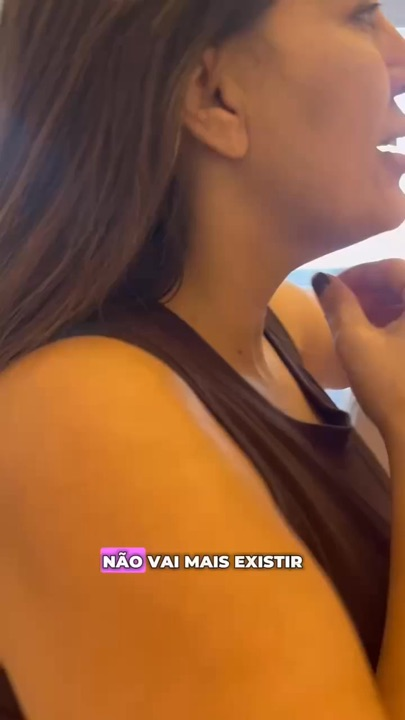
O tempo passa. A elegância permanece — quando bem cuidada. Flacidez e excesso de pele no pescoço não precisam mais ser ignorados. Existe um tratamento médico indicado…
Botão: WhatsApp ver anúncio ↗
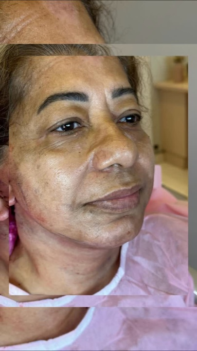
Essa paciente chegou até o consultório com uma queixa muito comum, especialmente entre pessoas que já passaram por determinada fase da vida: gordura localizada e…
Botão: WhatsApp ver anúncio ↗
05
Harmonização e lipo de papada
Biblioteca de anúncios ↗ Página no Facebook ↗
A Lipoaspiração de Papada é um procedimento que pode trazer mudanças surpreendentes, realçando a beleza natural do rosto. ⚜️ Ao remover o excesso de gordura nessa área,…
Botão: WhatsApp ver anúncio ↗
✨ Resultado impressionante! ✨ Uma das queixas mais comuns entre os pacientes acima dos 40 anos é o acúmulo de gordura e a flacidez na região do pescoço, o que apaga o…
Botão: WhatsApp ver anúncio ↗
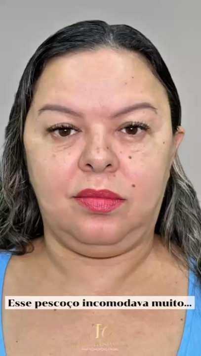
Adeus volume indesejado, olá contornos mais definidos 🤍 A Lipo de Papada ajuda a evidenciar a linha da mandíbula e trazer mais equilíbrio ao rosto, com resultados…
Botão: WhatsApp ver anúncio ↗
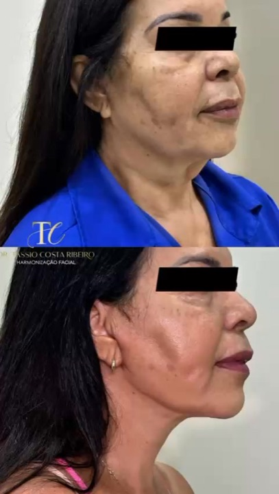
O pescoço é uma região onde mudanças estruturais podem alterar o contorno do perfil. Pele, gordura e musculatura influenciam diretamente nessa definição. O Lift de…
Botão: WhatsApp ver anúncio ↗
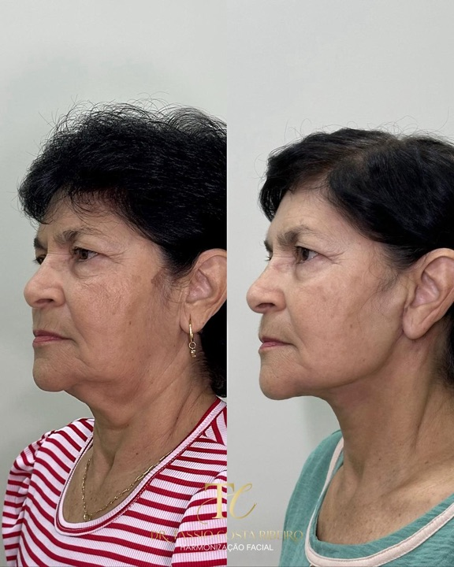
Seu pescoço merece a mesma atenção que seu rosto. Chegou o momento de cuidar dessa região tão delicada e conquistar um aspecto mais bonito, firme e elegante. 💫 Agenda…
Botão: WhatsApp ver anúncio ↗
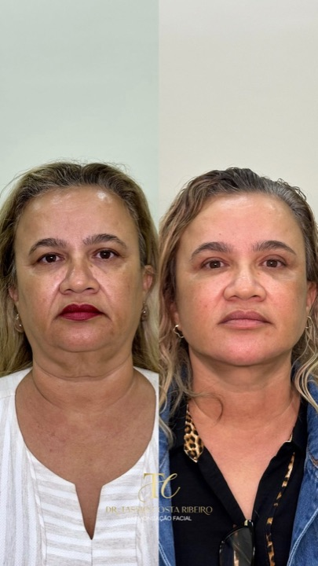
✨ O tempo deixa marcas. A cirurgia certa reposiciona histórias. Ela me procurou com um objetivo muito claro: rejuvenescer sem perder a naturalidade e com um resultado…
Botão: WhatsApp ver anúncio ↗
06
Lipo de papada HD com platismoplastia · Barra da Tijuca (RJ)
Biblioteca de anúncios ↗ Página no Facebook ↗
Um resultado de lipo de papada HD com Platismoplastia, Dra. Thayza Fabri
Botão: Agendar ver anúncio ↗
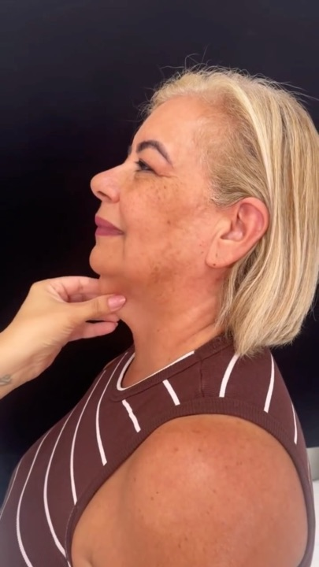
Algumas pacientes chegam dizendo: “Eu não quero mudar o meu rosto… só quero me trazer de volta.” E é exatamente aqui que a escultura facial faz sentido. Quando o…
Botão: Perfil do Instagram ver anúncio ↗
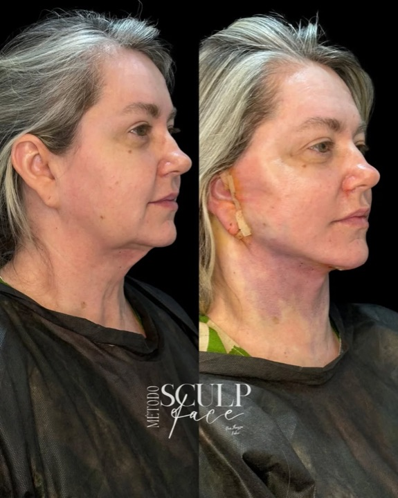
Nem sempre a mudança precisa ser gritante. Às vezes, ela é silenciosa… mas profundamente transformadora. O contorno do pescoço sustenta a harmonia do rosto, o perfil, a…
Botão: Perfil do Instagram ver anúncio ↗
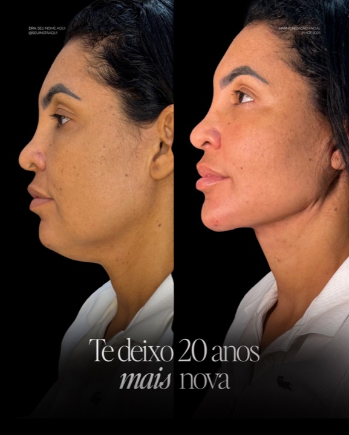
Ela chegou com medo. Medo de sentir dor. Medo de se arrepender. Medo de não se reconhecer no espelho. Durante a cirurgia, em alguns momentos, a ansiedade falava mais…
Botão: Perfil do Instagram ver anúncio ↗
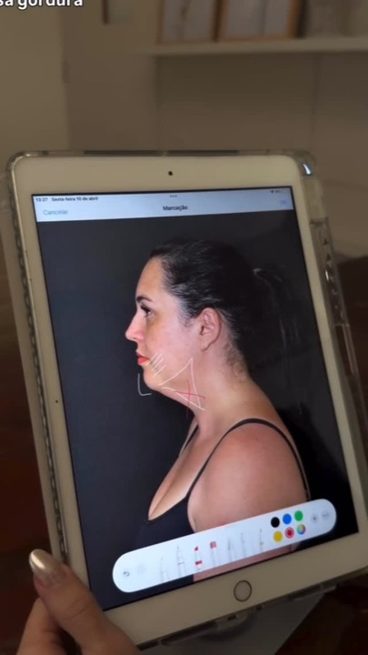
Cirurgia da papada
Botão: Perfil do Instagram ver anúncio ↗
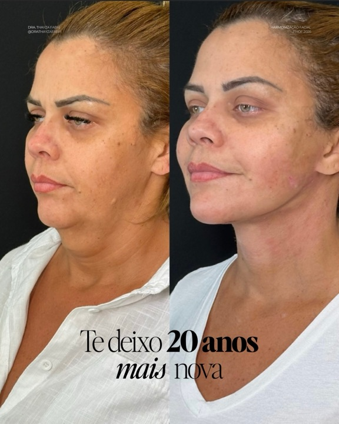
CIRURGIA DA PAPADA Se você já tentou: • Bioestimulador • Ultrassom microfocado • Lipo sem tratamento muscular …e ainda assim a papada continua aí, eu preciso te falar a…
Botão: Perfil do Instagram ver anúncio ↗
07
Página dedicada: “Lipoaspiração de Papada HD”
Biblioteca de anúncios ↗ Página no Facebook ↗
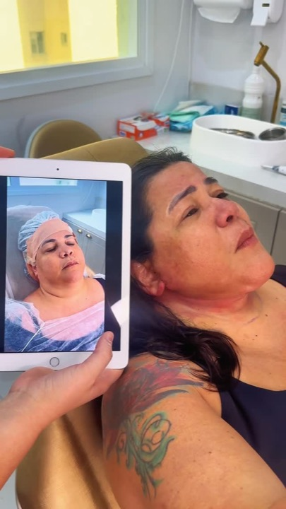
Nem sempre o incômodo é só estético, muitas vezes é sobre se reencontrar no espelho. A gordura localizada e a flacidez da papada podem esconder o contorno, mas o maior…
Botão: Perfil do Instagram ver anúncio ↗
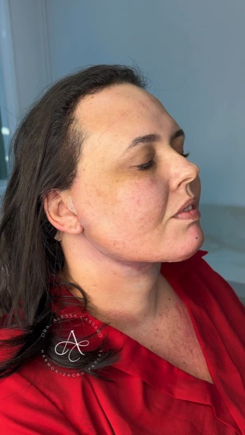
A papada muitas vezes interfere na percepção de beleza, leveza e definição do rosto. E isso impacta diretamente a autoestima. Quando devolvemos contorno, harmonia e…
Botão: Sem botão ver anúncio ↗
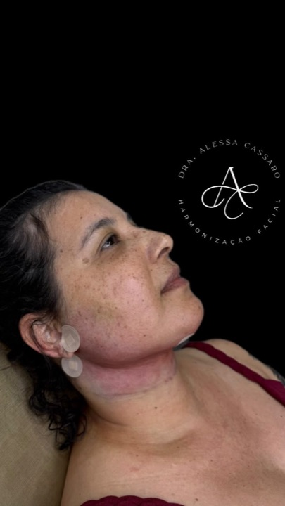
✨ Quando técnica, conhecimento e sensibilidade se encontram, o resultado vai além da estética. Este é um caso muito especial de lipedipapada tratada com o método dos 3…
Botão: Perfil do Instagram ver anúncio ↗
A genética pode influenciar, e muito no contorno facial. Essa paciente tinha acúmulo de gordura e frouxidão muscular herdada, o que deixava o rosto sem definição. Com um…
Botão: Perfil do Instagram ver anúncio ↗
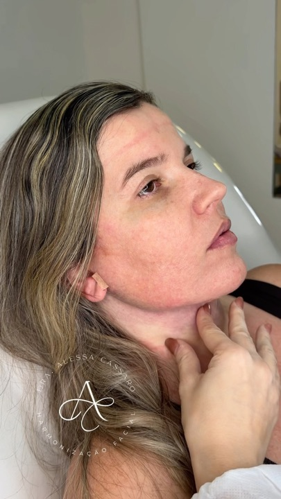
Menos flacidez, mais definição e um contorno que valoriza todo o perfil. ✨ Cada tratamento é planejado de forma personalizada para proporcionar resultados naturais e…
Botão: Perfil do Instagram ver anúncio ↗
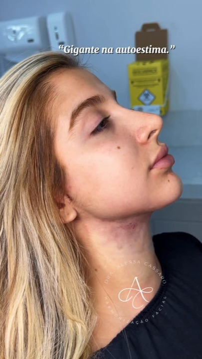
Nem sempre é sobre grandes mudanças. Às vezes, é um detalhe que transforma toda a harmonia do rosto. ✨ Resultado natural, leve e com muito mais definição de contorno.
Botão: Perfil do Instagram ver anúncio ↗
08
Cirurgiã-dentista (mesmo conselho do Dr. Giácomo)
Biblioteca de anúncios ↗ Página no Facebook ↗
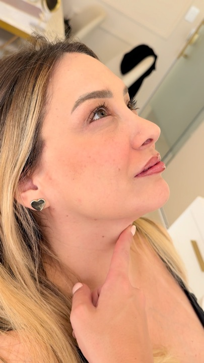
E se você pudesse encontrar sua melhor versão tomando apenas uma decisão? Essa paciente tomou a decisão de realizar a LIPO DE PAPADA e transformou sua auto estima 😍 E…
Botão: Perfil do Instagram ver anúncio ↗
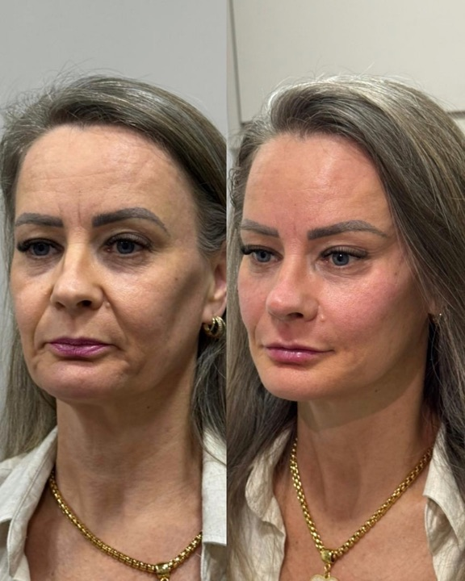
✨ Essa é daquelas transformações que fazem o tempo parar! Apenas reposicionando, sustentando e devolvendo o que o tempo levou, sem filtros, sem ângulos, sem truques. O…
Botão: Perfil do Instagram ver anúncio ↗
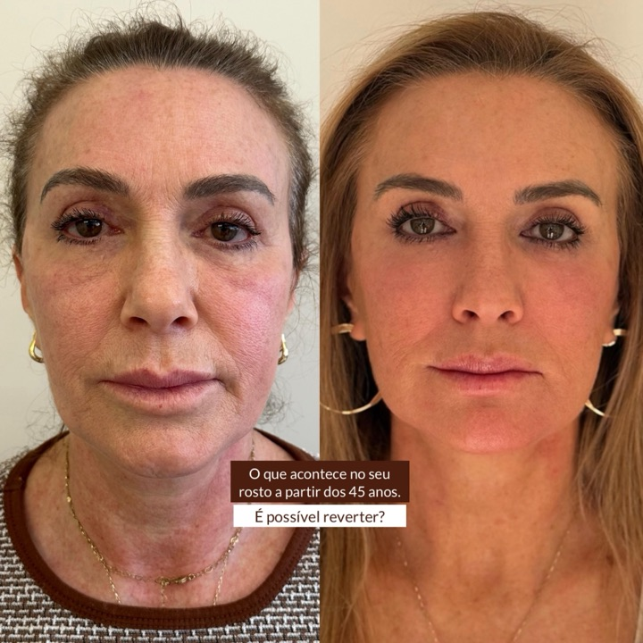
A partir dos 45 o rosto começa a perder sustentação. O olhar pesa, a mandíbula perde definição, a pele parece derreter, e isso começa a incomodar grande parte das…
Botão: Perfil do Instagram ver anúncio ↗
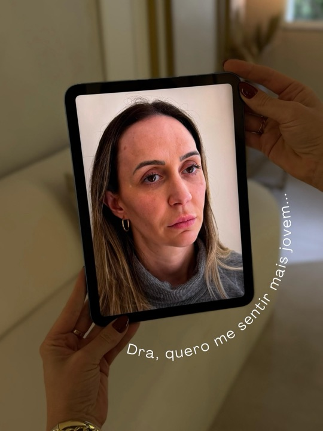
Ela começou a perceber pequenas mudanças… O contorno já não estava tão definido, a pele com menos firmeza, o rosto com um ar mais cansado, mesmo se sentindo bem. E é aí…
Botão: Perfil do Instagram ver anúncio ↗
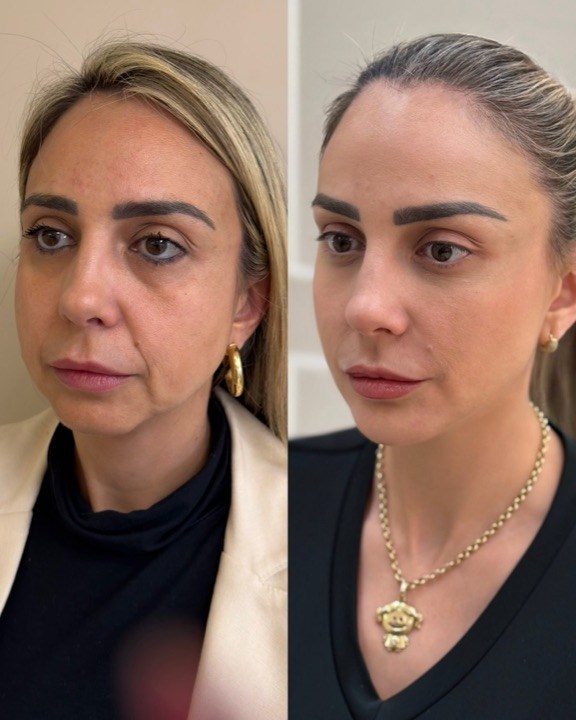
Ahhh, vai dizer que ela não ficou um ESPETÁCULO de mulher???? Tem resultados que embelezam. E tem resultados que despertam. Ela já era linda. Mas existia uma beleza ali…
Botão: Perfil do Instagram ver anúncio ↗
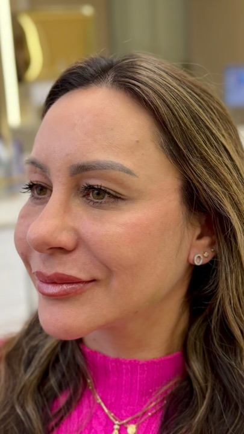
Ela estava sentindo o rosto derretido, cansado, e já não enxergava mais aquele contorno bonito que tinha antes. Com o GLOW LIFT trabalhamos pontos de sustentação,…
Botão: Perfil do Instagram ver anúncio ↗
09
Página dedicada: “Lipo de Papada”
Biblioteca de anúncios ↗ Página no Facebook ↗
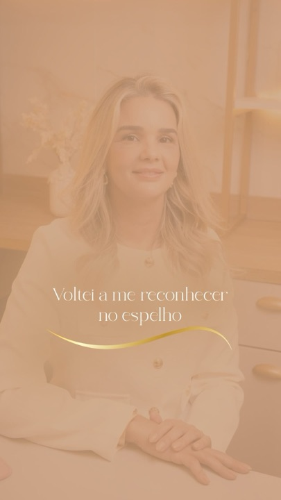
O que realmente a incomodava era olhar no espelho e sentir que seu rosto parecia mais cansado e sem definição. Mesmo sendo magra, a flacidez abaixo do queixo fazia com…
Botão: Perfil do Instagram ver anúncio ↗
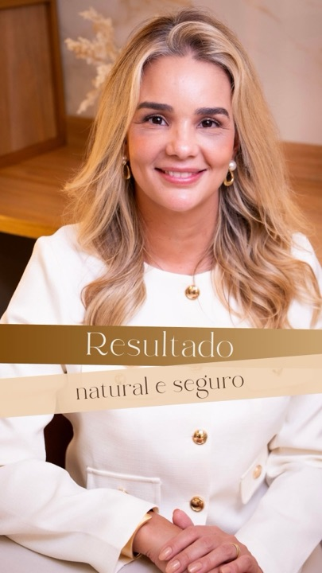
20 dias de resultado e uma mudança que vai além da estética. Se você se incomoda com papada, flacidez ou excesso de pele no pescoço, me manda uma mensagem para entender…
Botão: WhatsApp ver anúncio ↗
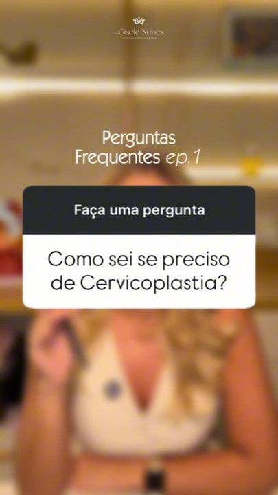
Você tem uma dúvida? Deixe aqui nos comentários. 😉✨ Indicação e avaliação não seguem fórmulas prontas. Cada rosto, cada pescoço, exigem um olhar técnico, preciso e…
Botão: WhatsApp ver anúncio ↗
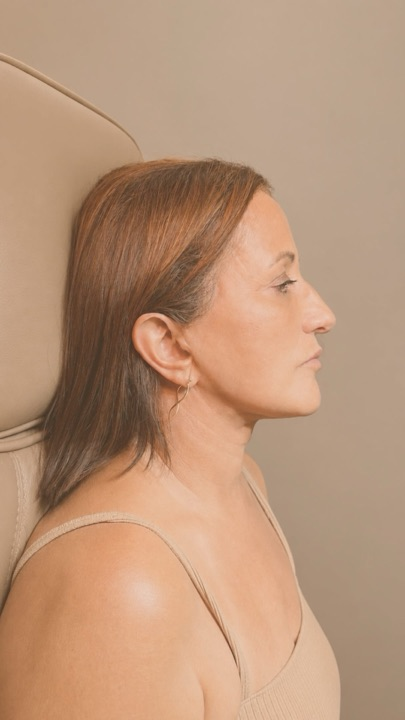
Quando o excesso de volume no pescoço começa a esconder os contornos do rosto, a aparência pode mudar completamente, a queixa da Andréia era justamente essa recuperar o…
Botão: WhatsApp ver anúncio ↗
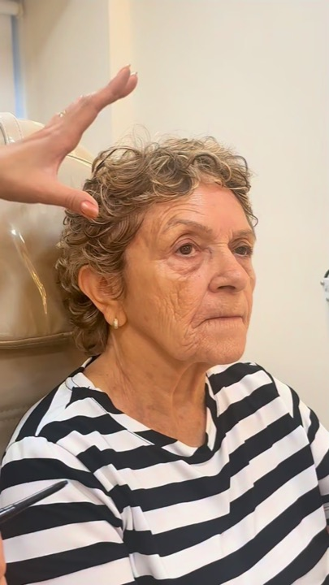
Deep Plane: quando o rejuvenescimento vai além da pele. A técnica atua em planos mais profundos da face, permitindo o reposicionamento dos tecidos e a redefinição dos…
Botão: WhatsApp ver anúncio ↗
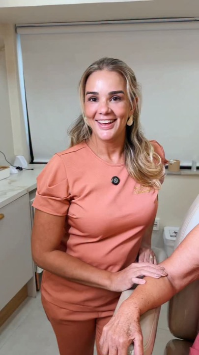
Aos 72 anos, essa paciente conquistou muito mais do que um contorno facial mais definido, a melhora da flacidez e da qualidade da pele trouxe um resultado tão natural…
Botão: Mensagem ver anúncio ↗
10
Harmonização facial e lipo de papada
Biblioteca de anúncios ↗ Página no Facebook ↗
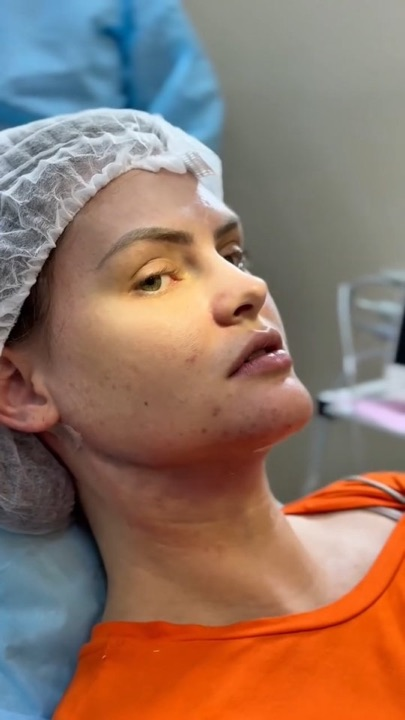
O incômodo com a nossa aparência às vezes não está no rosto inteiro, mas em um detalhe que, aos poucos, começa a incomodar mais do que gostaríamos. A papada é uma dessas…
Botão: Perfil do Instagram ver anúncio ↗
Mais do que uma questão estética, esse incômodo carregava peso emocional para a Elaine, afetava a forma como ela se via no espelho e como se sentia nas fotos, nos…
Botão: WhatsApp ver anúncio ↗
✨Tem certeza? 🤭 É isso que um olhar técnico, refinado, que acolhe e que entende o que realmente valoriza sua beleza pode fazer! Com o Papada Zero Lift Face devolvemos…
Botão: WhatsApp ver anúncio ↗
✨Que transformação impressionante!✨️ A mudança visual foi enorme, mas a maior transformação foi interna... Quando ela chegou, trazia um desejo claro: Olhar no espelho e…
Botão: WhatsApp ver anúncio ↗
No último ano, muitas famosas passaram por mudanças que chamaram atenção. Kris Jenner, Lindsay Lohan, Demi Moore… Aqui no Brasil, Simone Mendes, Karina Bacchi e…
Botão: WhatsApp ver anúncio ↗
Sim. Você pode eliminar o que te incomoda e te limita! A Amanda chegou até mim com um incômodo muito grande. Ela se olhava no espelho ou se via nas fotos e aquilo…
Botão: WhatsApp ver anúncio ↗
11
Harmonização · Rio de Janeiro
Biblioteca de anúncios ↗ Página no Facebook ↗
✨ ADEUS PAPADA, OLÁ AUTOESTIMA! ✨ Você já se incomodou com aquela gordurinha abaixo do queixo que insiste em aparecer nas fotos e no espelho? A Lipo de Papada é o…
Botão: WhatsApp ver anúncio ↗
O antes e depois da Viviane fala por si só… Mas o que ninguém vê é o incômodo que vinha junto com essa papada. Evitar fotos de lado, procurar sempre o melhor ângulo… até…
Botão: Perfil do Instagram ver anúncio ↗
Esse antes e depois não é só sobre estética… É sobre voltar a se reconhecer no espelho. Essa paciente chegou aqui incomodada com a papada, evitando fotos de perfil,…
Botão: WhatsApp ver anúncio ↗
Você viu o antes e depois da Michele… e pensou: ‘eu preciso disso’, né? Agora me responde com sinceridade: até quando você vai esconder a papada com ângulo, filtro ou…
Botão: WhatsApp ver anúncio ↗
12
Instituto estético e odontológico
Biblioteca de anúncios ↗ Página no Facebook ↗
Lipo de Papada cirúrgica Realizando o sonho do contorno facial perfeito 🤩 Retirada de gordura localizada ✅ Cirurgia rápida ✅ Tratamento seguro ✅
Botão: Fale conosco ver anúncio ↗
Mesmo treinando e fazendo dieta ela não some? Acelere o processo e retire aquela gordurinha insistente embaixo do queixo e mandíbula através da Lipoplastia HD. Converse…
Botão: Fale conosco ver anúncio ↗
Aquele ajuste fino pra definir embaixo do pescoço que você sempre desejou pode acontecer aqui na Doctors! Tire suas dúvidas com nosso time
Botão: Fale conosco ver anúncio ↗
Depois que a Solange Almeida revelou seu lifting facial, muita gente começou a olhar diferente pra esse procedimento e não é por acaso. O lifting não “muda o seu rosto”.…
Botão: WhatsApp ver anúncio ↗
Contorno facial é uma técnica que trabalha o equilíbrio das proporções do rosto, sempre respeitando a anatomia de cada pessoa. Cada caso é avaliado individualmente antes…
Botão: WhatsApp ver anúncio ↗
Rinomodelação HD ajusta o contorno nasal sem cirurgia, sempre a partir de uma avaliação individual sobre o que é seguro e adequado pra cada pessoa. Quer entender como…
Botão: WhatsApp ver anúncio ↗
13
Harmonização orofacial · LR Clinic
Biblioteca de anúncios ↗ Página no Facebook ↗
Ela esperou 4 anos para realizar o sonho da sua harmonização facial. Já havia feito lipo de papada, mas o resultado que desejava ainda não aparecia. Ela confiou esse…
Botão: Perfil do Instagram ver anúncio ↗
Na LR Clinic, cada detalhe tem intenção. Nada aqui é por acaso a luz, o aroma, a música, o acolhimento… tudo foi pensado para que você sinta elegância, calma e confiança…
Botão: Perfil do Instagram ver anúncio ↗
“Sinto meu rosto cansado.” E, nesse caso, o cansaço estava todo concentrado nas olheiras. Uma queixa muito comum e que vai muito além de dormir mal. Olheiras profundas,…
Botão: Perfil do Instagram ver anúncio ↗
A Monique chegou até mim com uma queixa que escuto com frequência: ela sentia que seu rosto estava cansado, sem definição e sem a estrutura que realmente valorizasse…
Botão: Perfil do Instagram ver anúncio ↗
Na LR Clinic, cada procedimento é mais do que uma transformação estética. É uma experiência de cuidado, acolhimento e valorização da sua essência! Antes de cada…
Botão: Perfil do Instagram ver anúncio ↗
Porque beleza, para mim, é quando o rosto comunica exatamente o que existe por dentro: força, empoderamento e elegância, sem perder a própria essência. Esse é o poder de…
Botão: Perfil do Instagram ver anúncio ↗
O caso da Karina de lado, com a mesma luz no antes e no depois, e uma palavra grande na capa, como “CONTORNO” ou “7 DIAS”. É o formato que está há mais tempo no ar no mercado.
Uma pergunta por vídeo, no formato da caixinha do Instagram: “Vai doer?”, “Sou magra, por que tenho papada?”, “Dá para fazer a avaliação online?”. Vira uma série e cada episódio é um anúncio.
O dia da cirurgia, o dia 7 e o dia 30, sempre da mesma paciente. Mostrar a recuperação tira o medo, que é a objeção número um.